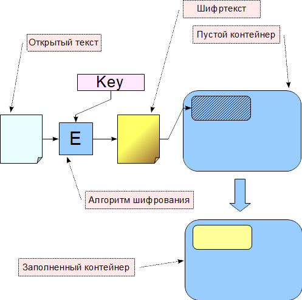
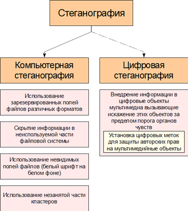

Название «Стеганография» происходит от двух греческих слов «steganos» − скрытый, тайный и «grapho» − писать. Это наука о скрытой передаче информации путем сохранения в тайне самого факта присутствия информации. В отличие от криптографии, которая скрывает содержание сообщений, стеганография скрывает само существование сообщений. Это достигается путем «растворения» одного сообщения в другом гораздо большего объема. Скрываемая информация называется стеганограммой. При этом криптография и стеганография сегодня часто используются совместно. Исторически стеганография известна довольно давно, так, например, в древней Греции использовался метод скрытия текстового сообщения с использованием дощечек покрытых воском которые предназначались для письма деревянной палочкой − стилусом. Для скрытия сообщения сначала на дереве писали сообщение, затем табличка покрывалась воском и на ней писали другое сообщение или оставляли неиспользованной. Таким образом сообщение на дереве было скрыто от злых злоумышленников. Другим способом, описанным древнегреческим историком Геродотом, было нанесение сообщения на обритую голову раба. Когда его волосы отрастали раб отправлялся получателю, который брил его голову и читал сообщение.
Широкую известность получили методы скрытого письма между строк невидимыми чернилами, которые для возможности почтения обрабатывались специальным образом. Изобретенные в античные времена они использовались в средние века и даже в начале XX века.
К более современным методам относятся использование микрофотосников, спрятанных внутри листа бумаги (вклеиваемые в текст в виде точки), проколы определенных букв в тексте и другие. Новый импульс к развитию стеганография получила с появлением и широким распространением компьютерных технологий. С началом всеобщего использования так называемых мультимедийных данных (аудио, видео, фото) появились методы и алгоритмы использования избыточности этих данных для скрытой передачи информации.
В настоящее время под стеганографией понимают скрытие информации в текстовых, графических, видео- и аудиофайлах с помощью специального программного обеспечения.
Стеганографическая система (стегосистема) − совокупность методов и средств, используемых для создания скрытого канала передачи информации.
Сообщение − это термин, используемый для общего названия передаваемой скрытой информации.
Контейнер − так называется любая несекретная информация, в которой может быть скрыто тайное сообщение. Пустой контейнер − контейнер, не содержащий секретного послания. Заполненный контейнер (стегоконтейнер) − контейнер, содержащий секретное послание.
Стеганографический канал (стегоканал) − канал передачи стегоконтейнера.
Ключ (стегоключ) − секретный ключ, нужный для сокрытия стегоконтейнера. Ключи в стегосистемах бывают двух типов: секретные и открытые.
Схема скрытия данных с помощью произвольного стегоалгоритма приведена на рис. 6.6.
 |
Рис. 6.6. Сокрытие данных с помощью стеганографических методов |
Стеганография состоит из двух основных частей − компьютерная стеганография и цифровая стеганография. Компьютерная стеганография занимается внедрением данных в скрытые области контейнеров без потери качества данных. Цифровая стеганография встраивает информацию непосредственно в области, содержащие мультимедийные данные. Это могут быть видеофайлы разных форматов, аудиофайлы, статичные изображения и т. д. Классификация стеганографических методов защиты информации приведена на рис. 6.7.
 |
Рис. 6.7. Классификация стеганографических методов защиты информации |
Основные требования, предъявляемые к современным компьютерным стегосистемам:
− необходимость обеспечения аутентичности и целостности скрываемой информации;
− работоспособность в случае, когда предполагается, что противнику известны используемые криптографические алгоритмы;
− необходимость сохранения основных свойств передаваемого стегоконтейнера при внесении в него стегоинформации;
− если факт скрытия сообщения стал известен противнику, извлечение сообщения должно быть сложной задачей.